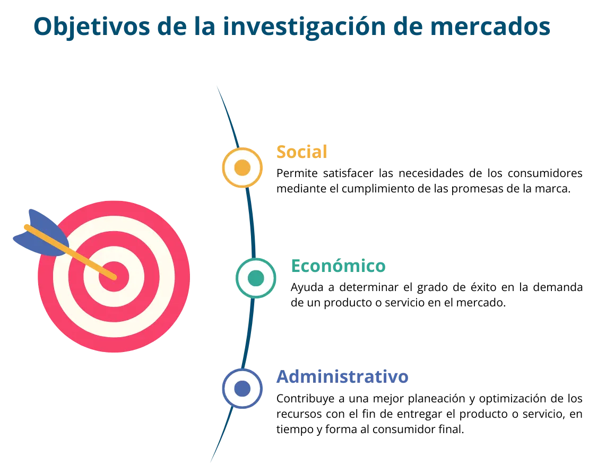

Los arquetipos de clientes son descripciones generales de personas que representan segmentos típicos de clientes (actuales o potenciales) dentro de un mercado. Pueden incluir características psicográficas y demográficas generales y se basa en patrones de comportamiento comunes y así como de insights sobre motivaciones profundas y puntos de dolor de los clientes. Los arquetipos son útiles para entender las necesidades y comportamientos de grupos más grandes de clientes.
A diferencia de los segmentos de mercado tradicionales que pueden basarse principalmente en datos demográficos y observaciones superficiales, los arquetipos de clientes buscan capturar la esencia de diferentes tipos de usuarios o consumidores en términos de personalidad, valores, actitudes y de cómo estos aspectos influyen en su interacción con los productos y servicios.
Estos perfiles de clientes ayudan a las empresas a visualizar a sus clientes como personajes “vivos” y reales, facilitando la creación de estrategias de marketing, desarrollo de productos y experiencias de usuario más empáticas y enfocadas.
Al utilizar los arquetipos de clientes, las empresas pueden personalizar sus ofertas y mensajes de manera que lleguen con eficiencia y oportunidad a grupos de consumidores específicos, mejorando la eficacia del marketing, la lealtad del cliente y el éxito del negocio.
Ver video de ¿qué es un arquetipo de cliente?
https://www.youtube.com/watch?v=I2KpjR3xxKc
En el marketing digital también se utiliza el buyer person,término de la mercadotecnia que ayuda a comprender a los clientes potenciales y con ello adaptar las estrategias de mercadotecnia y de comunicación.
De acuerdo con Mora (2019), el buyer persona es “un personaje ficticio que se construye a partir de la etnografía de una población (edad, sexo, costumbres, creencias, necesidades y puntos de dolor, entre otras muchas), con perfil psicológico, cualidades y comportamientos similares”.
Para Vercheval (2015) es “una representación semificticia del cliente ideal de un negocio. Se define usando datos sociodemográficos concretos e información sobre aspectos como su conducta online, personal, profesional y de la relación con la empresa que ofrece este producto o servicio”.
Aunque los términos “arquetipo de cliente” y “buyer persona” se utilizan frecuentemente en el ámbito del marketing, representan conceptos ligeramente diferentes por sus propias aplicaciones y propósitos únicos.
El arquetipo de cliente se caracteriza por representar modelos generalizados de grupos de clientes basados en características y comportamientos comunes, se centran en aspectos psicológicos y emocionales, motivacionales, deseos y valores, más que en detalles específicos individuales.
En tanto que el “buyer persona” representa el perfil del cliente ideal, es decir, describe un personaje semi-ficticio, que se construye a partir de investigaciones de mercado y datos reales sobre clientes existentes. Incluyen datos demográficos comportamientos de compra, historias personales, motivaciones y desafíos específicos.
En ambas definiciones, se entiende que los arquetipos de clientes son una construcción de un modelo de cliente idóneo de un producto o servicio, que se realiza teniendo información precisa sobre sus características y comportamientos. Para efectos de este eje temático, se tomará la definición del buyer persona de Vercheval (2015) debido a que se realizará desde la segmentación de mercado.
La segmentación de mercado es un proceso que identifica grupos de compradores con características similares, los cuales provocan que los mercados se dividan. Las empresas, en lugar de llegar a un mercado general, lo segmentan para que sea más sencillo atender las necesidades de estos clientes. Por otra parte, los arquetipos de clientes representan a un único individuo con datos concretos y particulares. El objetivo es alcanzar un conocimiento profundo de las motivaciones y retos de esa persona que es el ideal al que nos dirigimos.
Para elaborar un arquetipo de cliente, parte de los datos se extraen de la segmentación de mercado y otros son suposiciones, dando como resultado un personaje semi-ficticio como se puede observar en la siguiente figura.
Kotler y Keller (2012:98) definen a la investigación de mercados como “el diseño sistemático, la recolección, el análisis y la presentación de datos y conclusiones relativos a una situación específica que enfrenta una empresa”.
Tener conocimiento del mercado es fundamental para el éxito de una empresa, no requiriéndose contratar a una empresa para efectuar esta labor. Las pequeñas empresas también pueden realizar estos estudios de formas creativas y asequibles de la siguiente manera:
La Investigación de Mercados (IM) se concibe como un proceso que se sigue para recopilar, recabar, registrar, analizar e interpretar hechos e información relevante respecto del mercado, tener un mayor conocimiento del cliente y su comportamiento de compra. Se puede referir a un determinado caso relacionado con las actividades de personas, empresas e instituciones en general.
Con el advenimiento de Internet, la IM se ha convertido en una herramienta esencial para la toma de decisiones en cuanto al marketing y la publicidad. Permite profundizar en el conocimiento del consumidor para poder desarrollar, diversificar o introducir productos o servicios dirigidos a satisfacer sus necesidades, intereses, deseos, sueños y emociones.
El proceso eficaz de la investigación de mercados consta de cinco etapas.
En el momento de realizar una investigación de mercado lo más importante es entender el problema que se intenta resolver: ¿quién es mi cliente?, ¿qué necesita este cliente de nuestro producto o servicio?, ¿nuestro producto se venderá? Lo ideal es que sea específico con base en lo que se está buscando. Una vez definido el problema, se procede a establecer los objetivos de la investigación, es decir, lo que buscamos lograr con dicha investigación, como entender el comportamiento de los clientes o identificar y elaborar el segmento de mercado de la empresa.
Para diseñar un plan de investigación es necesario tomar decisiones sobre las fuentes de información, los métodos e instrumentos de investigación y los métodos de contacto. Respecto a las fuentes de información, podemos diferenciar la información primaria que es aquella que se obtiene con un objetivo específico o para un proyecto de investigación concreto y la información secundaria que es la que se ha recopilado para cualquier otro propósito y que ya existe. Los métodos e instrumentos de investigación suelen recopilar la información primaria a través de encuestas, entrevistas y observaciones, entre otros. Si es la primera vez que se implementa un instrumento, se sugiere que se hagan encuestas en lugares donde se encuentren personas que consideren podrían adquirir cierto producto o servicio. Con los métodos de contacto se decide cómo ponerse en contacto con los participantes. Estos métodos pueden ser: correo electrónico, teléfono, entrevistas personales o encuestas a través de las redes sociales digitales.
Esta etapa se compone de la aplicación de los instrumentos de investigación a las personas indicadas, bien en línea o de forma presencial. Hay dos técnicas de recopilación de información:
Cuantitativa: cuando se pretende buscar datos o medir algo, por ejemplo, para saber si la persona está dispuesta a pagar determinada cantidad por un producto o servicio.
Cualitativa: Medir una cualidad, una percepción, un aspecto que no se puede medir. Aquí el ejemplo podría ser ¿cómo la atendieron? Es un aspecto intangible, cuyo resultado permite medir la satisfacción del cliente para saber qué ofrecer y cómo ofrecerlo.
Estas técnicas de investigación permiten enlazar y profundizar en el conocimiento del público, cliente potencial o target al que se desea “conquistar”.
Esta etapa consiste en analizar la información encaminada a formular conclusiones a partir de la información recabada. Se representa la información en tablas o gráficas que permitan una mejor comprensión de ésta con la finalidad de observar los resultados encaminado a la toma de decisiones informadas.
Los encargados de la toma de decisiones dentro de la empresa deben reflexionar sobre las conclusiones de la investigación, pudiendo optar por estudiar más la situación y ampliar la investigación en caso de que los resultados obtenidos no fueran del todo concluyentes. La información obtenida a lo largo del estudio les ayudará a ver los problemas con mayor claridad.
Segmentar los mercados es una actividad que tiene el propósito de dividir un mercado heterogéneo en subgrupos más pequeños y homogéneos de consumidores que tienen necesidades, características o comportamientos similares, los cuales pueden requerir productos o mezclas de marketing distintos.
La importancia de delimitar un mercado general se debe a que dentro de él se presentan distintos tipos de consumidores con diferentes necesidades y deseos. Esta amplitud ocasiona que no sea posible que una sola organización cuente con los recursos para proporcionar todos los productos y servicios que satisfagan las necesidades de los consumidores. Por esta razón, es importante delimitar el mercado.
Fischer y Espejo (2011:61) definen la segmentación de mercados como “un proceso mediante el cual se identifica o se toma a un grupo de compradores homogéneos, es decir, se divide el mercado en varios submercados o segmentos de acuerdo con los diferentes deseos de compra y requerimientos de los consumidores”.
La segmentación de mercados se constituye por cuatro perfiles: demográfico, geográfico, comportamiento y psicográfico. En el siguiente apartado, se explicarán cada uno de ellos.
La elaboración de los perfiles demográficos, geográficos, comportamiento y psicográficos permiten la elaboración del segmento de mercado de una empresa. Es importante decir que hay empresas que tienen más de un mercado, sin embargo, al inicio del proyecto se recomienda enfocarse sólo en uno.
Para elaborar un arquetipo de cliente se debe entender que hay diversos tipos de perfiles que también participan en la toma de decisiones de las empresas. A continuación, se definirá cada uno:
Decisor: Persona que puede tomar la decisión final de la compra.
Prescriptor: Persona que recomienda el producto. Tiene cierta influencia en la decisión de compra, aunque no es quien toma la decisión final ni tampoco quien usará o consumirá el producto.
Influenciador: Persona que, con su opinión, puede condicionar positiva o negativamente la decisión de compra.
Ejemplo: Un restaurante realiza una encuesta y con los datos obtenidos descubre que su arquetipo de cliente es una persona ocupada y consciente de su salud, que busca una solución conveniente para mantener una dieta equilibrada y saludable, pero no tiene tiempo para cocinar o buscar opciones nutritivas.
Con este conocimiento, dicho restaurante desarrolla una propuesta de valor enfocada y efectiva brindando menús personalizados y con entregas a domicilio.
Dependiendo del arquetipo que se desea elaborar, la directora de Marketing de InboundCycle, recomienda los siguientes pasos (Vercheval, 2023):
Se deben elaborar las preguntas que se requieren para obtener la información necesaria. En la sección de Caja de herramientas encontrará plantillas con preguntas de sugerencia, las cuales pueden cambiar de acuerdo con la industria.
El proceso de investigación de mercados analizado anteriormente será un gran aliado para realizar esta parte. Acorde con la etapa de desarrollo del plan de investigación de mercados, algunos de los métodos e instrumentos de investigación se hacen a través de encuestas o entrevistas profundas. Si ya cuenta con clientes dentro de un negocio, se les pueden aplicar las preguntas estos clientes, en caso de que no se pueda acudir a los lugares donde se puedan encontrar.
También es buena idea analizar redes sociales como X, antes Twitter o Meta, antes Facebook o Instagram para buscar información. Los usuarios, a menudo, comparten sus gustos, sus quejas o sus intereses en sus perfiles. Otra alternativa es solicitar a expertos y personas influyentes que recomienden a alguien a quien entrevistar. Esto es especialmente útil si queremos introducirnos en nuevos mercados de los que no tenemos bases de datos.
Cuando hemos definido los métodos de investigación es momento de recopilar la información para la elaboración del arquetipo. Para que sea sencillo hacer el análisis posterior, se sugiere que la información se concentre en un solo lugar para detectar patrones dentro de las respuestas.
La finalidad de estas hojas es establecer la base del perfil. Si la información no se encuentra en un mismo lugar será difícil utilizarla para realizar el arquetipo del cliente. Las secciones más comunes que tiene una hoja de desarrollo son:
Con la información recolectada en la hoja de desarrollo se debe relatar una historia del arquetipo con la intención de no presentar una lista de características, sino contar con detalle quién es la representación como persona.
Para ilustrar mejor los conceptos citados conceptos, a continuación, se presenta un ejemplo en el contexto de una empresa que vende bicicletas eléctricas, ofreciendo un ejemplo de arquetipo de cliente, público objetivo y buyer persona.
Estos ejemplos muestran cómo el arquetipo de cliente ofrece una vista general de un tipo de cliente basado en motivaciones y valores, el público objetivo define un grupo demográfico más amplio con necesidades comunes, y el “buyer persona” detalla un perfil específico que representa a un cliente ideal, detalla sus necesidades personales, desafíos y motivaciones para comprar.
Ficher, L., & Espejo, J. (2011). Mercadotecnia (4.a ed.). McGraw-Hill/Interamericana Editores, S.A. de C.V.
Kotler, P., & Keller, K. (2012). Dirección de marketing (14.a ed.). Pearson Educación.
Mora, M. N. B., Carvajal, V. M. P., & Álvarez, G. D. L. (2019). El Buyer Persona como factor clave entre las tendencias en Gestión Empresarial. Recimundo, 3 (3 Esp.), 659-681.
Moreno, J. (2023). Cliente ideal: qué es, cómo definirlo y ejemplos. Hubspot. https://blog.hubspot.es/marketing/crear-perfil-cliente-ideal
Vercheval, S. (2015). Buyer persona: qué es, tipos y cómo definirlo + plantilla. https://www.inboundcycle.com/buyer-persona